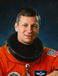

Lyndon B. Johnson Space Center
Houston, Texas 77058
|
National Aeronautics and Space Administration Lyndon B. Johnson Space Center Houston, Texas 77058 |
 |
Biographical Data |
||
Steven R. Nagel (Colonel, U.S. Air Force, Ret.)
NASA Astronaut (Deceased)
PERSONAL DATA: Born October 27, 1946, in Canton, Illinois. Married to Linda M. Godwin of Houston, Texas. Two daughters. His hobbies include sport flying and astronomy.
EDUCATION: Graduated from Canton Senior High School, Canton, Illinois, in 1964; received a bachelor of science degree in aerospace engineering (high honors) from the University of Illinois in 1969 and a master of science degree in mechanical engineering from California State University, Fresno, California, in 1978.
ORGANIZATIONS: Order of Daedalians, American Institute of Aeronautics and Astronautics, Society of Experimental Test Pilots, Association of Space Explorers.
SPECIAL HONORS: Awarded the Air Force Distinguished Flying Cross and the Air Medal with 7 Oak Leaf Clusters; for undergraduate pilot training, recipient of the Commander’s Trophy, the Flying Trophy, the Academic Trophy and the Orville Wright Achievement Award (Order of Daedalians). Also presented the Air Force Meritorious Service Medal (1978). Recipient of four NASA Space Flight Medals (1985, 1991, 1993); Exceptional Service Medals (1988, 1989); Outstanding Leadership Medal (1992); AAS Flight Achievement Award, STS-37 Crew (1992); Outstanding Alumni Award, University of Illinois (1992); Distinguished Service Medal (1994), Distinguished Alumni Award, California State University, Fresno (1994) and Lincoln Laureate, State of Illinois (1994).
EXPERIENCE: Nagel received his commission in 1969 through the Air Force Reserve Officer Training Corps (AFROTC) program at the University of Illinois. He completed undergraduate pilot training at Laredo Air Force Base, Texas, in February 1970, and subsequently reported to Luke Air Force Base, Arizona, for F-100 training.
From October 1970 to July 1971, Nagel was an F-100 pilot with the 68th Tactical Fighter Squadron at England Air Force Base, Louisiana. He served a 1-year tour of duty as a T-28 instructor for the Laotian Air Force at Udorn RTAFB, Udorn, Thailand, prior to returning to the United States in October 1972 to assume A-7D instructor pilot and flight examiner duties at England Air Force Base, Louisiana. Nagel attended the USAF Test Pilot School at Edwards Air Force Base, California, from February to December 1975. In January 1976, he was assigned to the 6512th Test Squadron located at Edwards. As a test pilot, he worked on various projects, including flying the F-4 and A-7D.
He has logged 12,600 hours flying time; 9,640 hours in jet aircraft.
NASA EXPERIENCE: Nagel became a NASA astronaut in August 1979. His technical assignments have included backup T 38 chase pilot for STS-1; support crew and backup entry spacecraft communicator (CAPCOM) for STS-2; support crew and primary entry CAPCOM for STS-3; software verification at the Shuttle Avionics Integration Laboratory (SAIL) and the Flight Simulation Laboratory (FSL); representative of the Astronaut Office in the development of a crew escape system for the space shuttle and acting chief of the astronaut office. Nagel is a veteran of four space flights (STS-51G and STS-61AA in 1985, STS-37 in 1991 and STS-55 in 1993) as described below.
Nagel first flew as a mission specialist on STS-51G, which launched from the Kennedy Space Center, Florida, on June 17, 1985. The crew aboard the Space Shuttle Discovery deployed communications satellites for Mexico (Morelos), the Arab League (Arabsat) and the United States (AT&T Telstar). They used the Remote Manipulator System (RMS) to deploy and later retrieve the SPARTAN satellite, which performed 17 hours of x-ray astronomy experiments while separated from the space shuttle. In addition, the crew activated the Automated Directional Solidification Furnace (ADSF) and six “Getaway Specials,” participated in biomedical experiments and conducted a laser tracking experiment as part of the Strategic Defense Initiative. After completing approximately 170 hours of space flight, Discovery landed at Edwards Air Force Base, California, on June 24, 1985.
Nagel then flew as pilot on STS-61A, the West German D-1 Spacelab mission, which launched from Kennedy Space Center, Florida, on October 30, 1985. This mission was the first in which payload activities were controlled from outside the United States. More than 75 scientific experiments were completed in the areas of physiological sciences, materials processing, biology and navigation. After completing 111 orbits of the Earth, Space Shuttle Challenger landed at Edwards Air Force Base, California, on November 6, 1985.
On his third flight, Nagel was commander of STS-37, which launched into orbit on April 5, 1991, from Kennedy Space Center, Florida, and landed on April 11, 1991, at Edwards Air Force Base, California. During this mission, the crew aboard the Space Shuttle Atlantis deployed the Gamma Ray Observatory (GRO) for the purpose of exploring gamma ray sources throughout the universe and conducted the first scheduled spacewalk in more than 5.5 years. Also, the crew performed the first successful unscheduled spacewalk to free a stuck antenna on GRO.
Nagel also served as commander of STS-55, the German D-2 Spacelab mission. After launching on April 26, 1993, on the Shuttle Columbia, the crew landed 10 days later on May 6, 1993, at Edwards Air Force Base, California. During the ambitious mission, 89 experiments were performed in many disciplines, such as materials processing, life sciences, robotics, technology, astronomy and earth mapping.
With the completion of his fourth flight, Nagel has logged a total of 723 hours in space.
Nagel retired from the Air Force effective February 28, 1995. He retired from the Astronaut Office effective March 1, 1995, to assume the full-time position of deputy director for operations development, Safety, Reliability, and Quality Assurance Office, Johnson Space Center, Houston, Texas. In September 1996, Nagel transferred to the Aircraft Operations Division where he performed duties as a research pilot, chief of aviation safety and deputy division chief. He retired from NASA on May 31, 2011.
FEBRUARY 2015
This is the only version available from NASA. Updates must be sought direct from the above named individual.